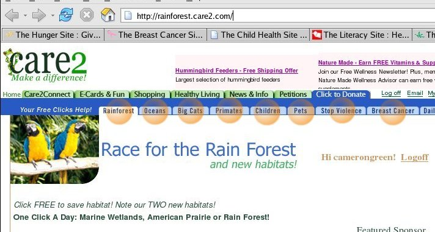

Tab Charity
If you have downloaded and used a tabbed browser like the excellent and free Mozilla or Firefox you will understand how handy tabbed browsing is.
One of the great features about tabbed browsing is that you can save a number of tabs as a "tab-group" in your bookmarks. From this point on when you click on the bookmark/tab-group all of the pages will open at once in new tabs, neatly one behind the other.
Now this has a number of uses, but my favourite is to use it for the "Click to Donate" charity sites out on the web. You put as many as you can into a tab-group, and then when you have a moment you click on the tab-group, click through all the donations, and without much effort you've done some good in the world.
It only takes a couple of minutes to set up so give it a go.
Open up a new window in your Firefox or Mozilla web browser by holding down the "Ctrl" key and pressing "n" in your current web browser window. You'll want to keep these instructions in one, and work in the other.
Type in http:///www.thehungersite.com into the new windows address bar and press "Enter".
You will note in the below image at the top there are links to the Breast Cancer site, Rainforest site etc. Hold down your "Ctrl" key and click on each of these links, opening it up in a new tab (this can also be achieved by right clicking on a link and choosing Open Link in New Tab, or as I prefer Middle Clicking your mouse wheel on a link).
Now in your web browser window hold down "Ctrl" and press "t" at the same time, to open up a new empty tab.
Type into it's address bar, http://rainforest.care2.com and press "Enter".
You will note as before at the top of this page there are also links Stop Violence Against Women, Animal Care etc. Hold down your "Ctrl" key and click on each of these links, opening it up in a new tab as well. We now have many tabs open.
From the "Bookmarks" menu, select "Bookmark This Page". A dialog will come up like this one.
Name : In the name field type "Free Donations".
Create In : Click on the down arrow and choose "Personal Toolbar Folder".
Bookmark All Tabs in a Folder: Make sure this checkbox is ticked.
Add: Select Add.
Make sure your personal toolbar is viewable by going to the "View" menu, then "Toolbars", and make sure "Bookmarks Folder" has a tick next to it. If it doesn't, then click it. Now skip down past the Mozilla instructions.
On the "Bookmarks" menu, select "Bookmark This Group of Tabs". A dialog will come up like this one.
Name : In the name field type "Free Donations".
Destination : Click on the "Personal Toolbar Folder".
Bookmark this group of tabs: Make sure this checkbox is ticked.
OK: Select OK.
Make sure your personal toolbar is viewable by going to the "View" menu, then "Show/Hide", and make sure "Personal Toolbar" has a tick next to it. If it doesn't, then click it.
You should then see the following folder in your toolbar, this image is from Firefox but Mozilla should look similar :
Now we want to test the link, the easiest way to do this is close and restart your browser, however that is optional.
Now click on the new "Free Donations" link on your toolbar. In Mozilla this will automatically open up all the links. In Firefox theres another step. A menu will open up with the click to donate sites we just put in it, go down to the bottom and click on "Open in Tabs", they will open up at once, and there we have it.
Each night, or when you have time (they generally only allow one click per day) you can then select the "Free Donations" link, and do a single mouse click on each page and make a number of small donations for virtually nothing.
Once you have clicked them all and you have seen the page for each that says a variation on "Thanks for Clicking", you can then use the tab close button on the top right of each tab (not the browser close though) to close them easily and quickly.
So thats a guide to something really cool you can do via tabbed browsing. Some of the sites, particularly those hosted at Care2 (which also has free 100Mb webmail where a percentage of the revenue is given to charities) have cute pictures of animals representing levels you have achieved by your clicks. You have a long way to go to catch up to me though as I've been doing it every day for a while now.
As for your Personal Toolbar Folder, if you are at a site you visit often, you can simply select the text in the address window, then click on it and drag it onto your Personal Toolbar Folder to add a link. Handy for sites like your web search and your webmail that you visit almost every time you open your browser.
So can tabbed browsing save the world? Well probably not but with your help it can make it a little kinder.
Peace - Cameron